Using Time-to-React based on Naturalistic Traffic Object Behavior for Scenario-Based Risk Assessment of Automated Driving
S. Wagner, K. Groh, T. Kühbeck, …, A. Knoll. IEEE Intelligent Vehicles Symposium (IV) 2018. doi:10.1109/IVS.2018.8500624.
한눈에시나리오의 위험도를 ADS 알고리즘이 아니라 시나리오 자체의 전개로 매기는 metric이다. 한 장면에서 출발해 주변 차량의 자연주행 거동을 Monte-Carlo로 100가지 미래로 펼치고, 각 미래를 충돌까지의 시간(TTC)이 아니라 피하려면 언제까지 반응해야 하는가를 뜻하는 Time-to-React(TTR)로 평가한 뒤, 발생확률로 가중해 더해 시나리오에 0~1 위험값 하나를 준다. 핵심은 이 위험도를 "시험용"으로 설계했다는 점이다. 실제로 위험한 장면을 낮게 보는 false negative를 피하려고 일부러 위험을 약간 과대평가하고, 같은 입력이면 같은 값이 나오게 결정론적으로 만든다. 특정 AV에 기대지 않아 사전 난이도 매기기에 쓸 수 있고, 우리 설명적 IRT의 난이도 공변량 후보가 된다.
Fig 1 · 위험도 평가의 개념 흐름(분해 → 예측 → 합성)
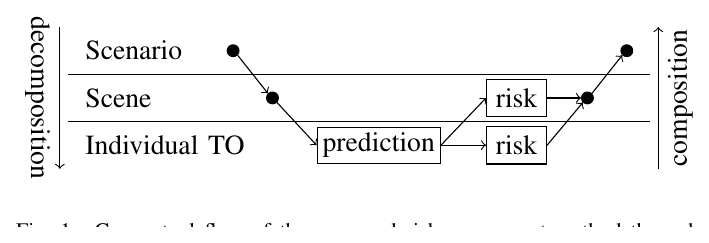
시나리오를 장면·개별 교통객체로 분해해 예측으로 위험을 계산한 뒤, 다시 합성해 시나리오 위험도로 모은다. 위험이 ADS가 아니라 객체 거동 전개에서 나온다. (클릭 시 확대)
Fig 5 · TTR 회피 메커니즘 (예측된 미래 + 회피 경로)
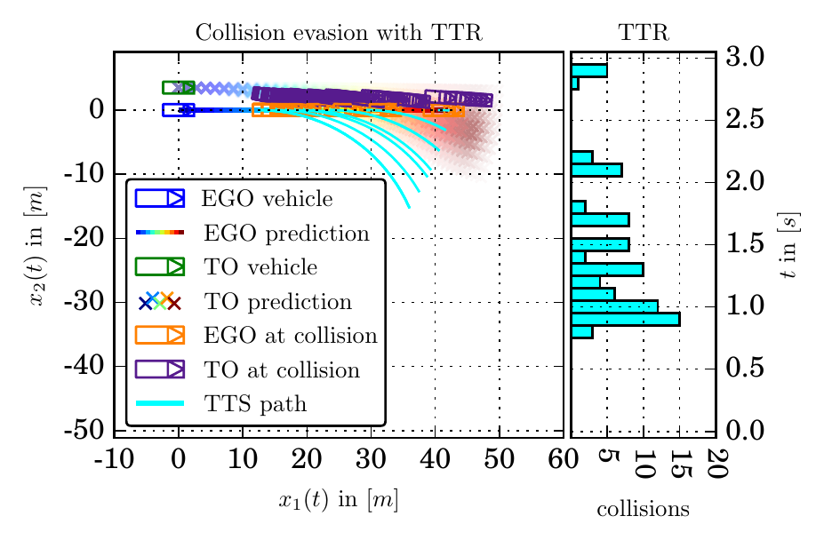
옆 차로 TO의 가능한 미래(보라)를 100개 펼치면 EGO와 여러 충돌점이 생긴다. 각 충돌마다 EGO가 조향·제동·가속으로 피할 수 있는 마지막 시점(TTR)을 계산한다. 오른쪽 히스토그램이 그 TTR 분포다. 위험은 "충돌까지 시간"이 아니라 "피할 수 있는 여지"로 매겨진다. (클릭 시 확대)
Fig 9 · TTR 위험도 vs 흔한 지표(TTC·WTTC·THW)
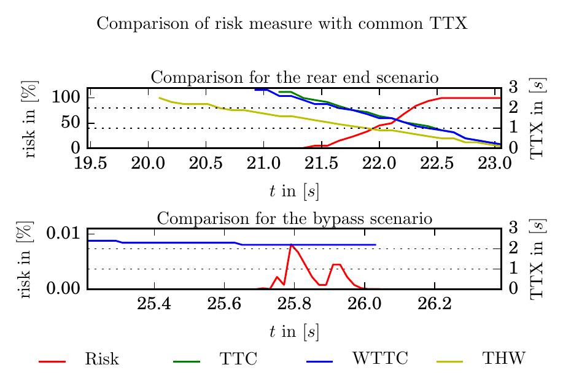
제안 위험도(빨강)는 반응시간을 반영해 충돌 직전 가파르게 오르고, 안전한 추월 통과(아래)에는 거의 0을 준다. 반면 WTTC는 추월을 추돌만큼 위험하다고 과장한다. TTR 위험도가 흔한 지표보다 시험에 더 적합함을 보인다. (클릭 시 확대)
접근
Monte-Carlo 장면 전개(100궤적) + TTR로 시나리오 위험도(0~1)
비의존
euroFOT 자연주행 거동 기반, 특정 ADS 플래너에 기대지 않음
시험용 설계
false negative 회피(위험 약간 과대평가) · 결정론적 재현
우리와의 연결
난이도 공변량 후보이자 우리가 넘어서는 대안
연구 배경
자율주행을 시장에 내놓기 전에 막대한 시험이 필요한데, 그 시험에서 장면을 사고/무사고로만 나누면 정보가 너무 적다. 사고로 이어지지 않은 아슬아슬한 near miss도 탑승자에게는 거부감을 주기 때문에, 연속적인 위험도가 필요하다는 것이 출발점이다. 그런데 Wagner가 강조하는 것은 시험용 위험도의 요구가 주행 중 알고리즘이 쓰는 위험도와 다르다는 점이다. 시험에서는 무엇보다 false negative, 곧 실제로 위험한 장면을 낮게 보는 일이 없어야 한다. 그래야 ADS의 결함을 놓치지 않는다. 그래서 위험을 차라리 약간 과대평가하는 쪽을 택하고, 같은 시험을 반복하면 같은 결과가 나오도록 결정론적이어야 한다는 두 요구를 먼저 못 박는다. 기존의 worst-case TTC(WTTC, Wachenfeld)는 모든 차가 최대한 빨리 충돌하려 든다고 가정해 false negative는 피하지만, 그 대신 무해한 장면까지 위험하다고 표시하는 false positive가 많아 멀쩡한 기능이 반려될 수 있다. 위험이 ADS 거동이 아니라 시나리오 전개에서 나와야 한다는 문제의식이 여기서 분명해진다.
무엇을 했나
핵심 기여는 한 장면을 여러 갈래의 가능한 미래로 펼쳐 위험을 매기는 방법이다(Fig. 1). 주변 교통 객체(TO)의 거동을 가장 그럴듯한 하나의 미래로 예측하는 대신, Monte-Carlo로 가능한 전개를 100가지 표본하고 각 전개의 발생확률까지 함께 가진다. 그런 다음 각 미래의 충돌을 충돌까지 남은 시간(TTC)이 아니라 Time-to-React, 곧 차량의 물리적 한계 안에서 충돌을 피하려면 언제까지 반응해야 하는가로 평가하고, 이를 발생확률로 가중해 더해 시나리오에 0~1 위험값 하나를 부여한다. 위험을 시나리오 계층(시나리오·장면·개별 TO)을 따라 아래로 분해해 계산한 뒤 위로 합성하는 구조이며, 시나리오 전체 위험은 장면별 위험의 최댓값으로 잡는다 "One can get the risk measure for a whole scenario by computing the maximum scene risk afterwards"(§I·III).
방법론 상세
Monte-Carlo 장면 예측: TO를 등속선회·등가속(CTRA) 모델로 두고, 입력인 가속도 a와 선회율 ω를 변동시켜 미래 궤적을 표본한다. 변동 분포는 BMW의 대규모 자연주행연구 euroFOT 기록에 적합한 가우시안이며, 현재 입력 주변 3σ 구간(99.73%)에서 Nsmp = 100 궤적을 뽑는다. 중립 주행일수록 분포가 좁고 동적 상황일수록 넓어진다.
TTR 위험(TTC 대신): TTR은 세 회피 방식의 최댓값으로, 끝까지 조향(time-to-steer)·완전 제동(time-to-brake)·완전 가속(time-to-kickdown) 중 가장 늦게까지 가능한 시점이다. "the TTR describes the time which is left to avoid the collision within the physical constraints of the vehicle"(§III-B). 예시 장면에서는 TO의 가능한 전개 100개 중 86개가 EGO와 충돌하고, 첫 충돌은 1.0s 뒤지만 가장 짧은 회피 가능 시간은 0.8s였다(Fig. 5). 86%가 충돌한다고 그대로 위험 0.86으로 쓰면 틀린다. 충돌마다 피하기 쉬운 정도가 다르기 때문에 TTC가 아니라 TTR로 가중한다.
위험 가중 함수: 회피 가능 시간이 point of no return TPNR보다 짧은 충돌은 100%로, 그보다 길어지면 Tmax까지 단조 감소해 0%로 가중한다. 합산값 r ∈ [0,1]은 충돌확률이 아니라 위협 수준으로 읽어야 한다 "should not be directly interpreted as collision probability, but rather as threat level"(§III-C).
다중 차량 합성: 여러 TO를 모두 고려한 정확한 위험 rdep은 계산량이 지수적(O(NsmpNTO))이라, 독립 가정 근사 rind(선형 O(Nsmp·NTO))를 쓰고 rind ≥ rdep임을 증명한다. 즉 근사가 항상 과대평가라 false negative를 피한다는 시험 요구를 수식으로 만족시킨다.
모수(Table II): 예측 구간 3.0s·간격 0.1s·궤적 100개·TPNR 0.5s·Tmax 2.0s·기울기 m=1.0·합성 임계 10%. m과 Tmax는 사용자가 조절하지만, TPNR(반응 시점)은 시험 대상 시스템이 정한다.
결과
세 실험으로 지표가 기대대로 동작함을 보인다. 첫째, EGO가 21.0m/s로 앞의 10.0m/s TO를 들이받는 추돌 시뮬레이션에서 위험이 충돌까지 단조 증가하고 불가피해지는 순간 100%에 닿는다. 둘째, EGO가 26.0m/s로 절반 속도의 TO를 옆으로 추월해 지나가는 장면에서는 위험이 거의 0으로, 고속도로에서 흔하고 안전한 통과로 올바르게 판정된다. 셋째, 독일 고속도로 실주행 끼어들기 데이터에서 끼어드는 TO가 EGO 안전 간격에 들어올 때 약 0.4% 위험 피크가 잡히고 EGO가 24.0m/s로 감속해 여유를 회복한다. 흔한 지표와의 비교가 핵심이다(Fig. 9). 제안 위험도는 반응시간을 반영해 위험을 더 일찍·더 가파르게 드러내는 반면, TTC·WTTC·THW는 0초를 향해 완만히 내려갈 뿐이고, 특히 WTTC는 안전한 추월을 추돌만큼 위험하다고 과장한다.
한계
위험도가 TO 거동 예측 모델의 정확도와 Monte-Carlo 비용, 그리고 적합한 분포에 민감하다. 저자 스스로 예측에 단순한 CTRA 모델을 썼다고 밝히며, 기동 기반·상호작용 인지 모델이 위험도에 미치는 영향을 향후 과제로 남긴다. 우리 관점에서 더 중요한 한계가 하나 있다. 이 위험도는 시나리오 쪽 성질을 노리지만 완전히 SUT-독립은 아니다. 가중 함수의 TPNR(반응 시점)이 시험 대상 시스템에 따라 달라지기 때문이다"The reaction time value is of course system dependent and can not be defined globally"(§III-C). 또 TTR이 가정하는 회피는 차량의 물리적 한계 안의 일반적 조작이지 특정 AV의 실제 회피 정책이 아니다.
본 연구와의 관계
Wagner의 TTR 위험도는 우리 설명적 IRT에서 난이도 b를 시나리오 특징의 함수로 둘 때 쓸 공변량 후보다. 위험도 자체, 또는 그 입력인 TTR 분포·충돌 비율·euroFOT 거동 모수가 난이도 특징의 하나가 될 수 있다. 또 false negative를 피하려 위험을 과대평가하고 그것을 수식으로 보장한 설계 감각은, 우리가 측정 모델에서 회피가능성 하한이나 불확실성을 다룰 때 참고할 만하다.
차이도 분명하다. Wagner는 난이도를 하나의 휴리스틱 값으로 고정하지, 여러 AV의 충돌 결과에서 추정하지 않는다. 무엇보다 그가 인정한 TPNR의 시스템 의존성은 "시나리오 쪽 성질"만으로 위험을 매기려 해도 어딘가에서 시험 대상의 가정이 새어 든다는 것을 보여준다. 이는 Qiu의 고정 EV나 Ponn의 "완전 독립은 불가능"과 같은 자리의 문제다. 우리는 이런 양을 측정 모델의 입력·검증으로 쓰되, 난이도와 강건성을 여러 AV의 응답에서 하나의 SUT-불변 척도로 함께 추정해 그 새어 듦 자체를 모델 안에서 다룬다. 끝으로 TTR이 회피가능성을 전제한 양이라는 점은 섹션 D의 회피가능성 하한 u와도 닿는다.
IEEE ITSC 20182018MPC criticality난이도 metric
Criticality Metric for the Safety Validation of Automated Driving using Model Predictive Control
P. Junietz, J. Schneider, H. Winner. 2018 IEEE Int. Conf. on Intelligent Transportation Systems (ITSC). TU Darmstadt (FZD).
한눈에시나리오의 criticality를 "그 상황에서 요구되는 운전 난이도(driving requirements)"로 정의하고, 모델예측제어(MPC)로 계산하는 metric이다. 운전 난이도를 네 요소(횡·종 가속도, 각도 보정 여유, 속도 보정 여유)로 적은 목적함수를 만들고, 단순 차량 모델 위에서 그 함수를 최소화하는 궤적을 찾는다. 그 최소값, 곧 "가장 쉽게 빠져나가는 길조차 얼마나 어려운가"가 시나리오의 criticality가 된다. 가용 운전 성능과 무관하게 난이도만 재는 것을 명시적 목표로 삼지만, 정작 가중치는 운전 실력에 맞춰 보정해야 한다고 인정한다.
Fig 1 · metric의 두 용도(시나리오 식별 · 안전 surrogate)
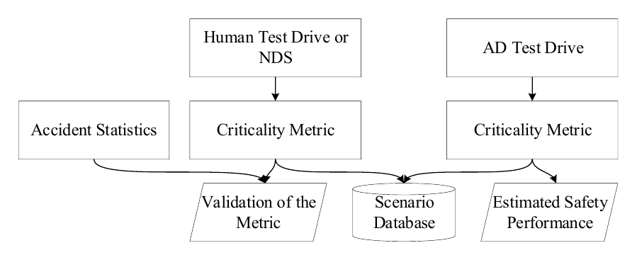
criticality metric의 두 용도: 주행 데이터에서 위험 시나리오를 골라 DB로 모으는 것(시나리오 식별)과, AD 시험주행의 안전을 추정하는 것(safety surrogate). 인간·AD 주행 모두에 적용한다. (클릭 시 확대)
Fig 2 · 고속도로 네 시나리오의 궤적과 criticality
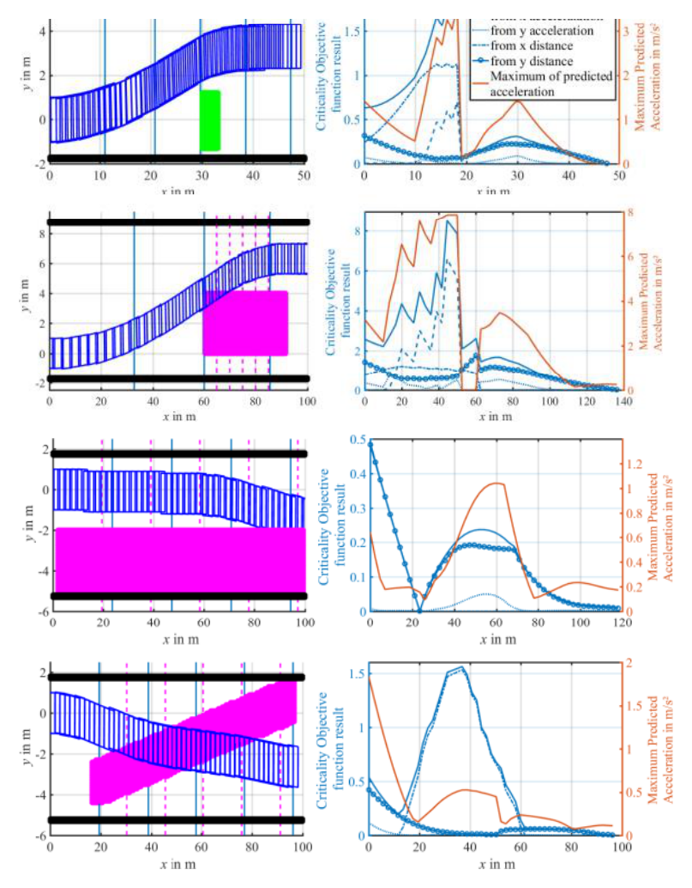
네 시나리오의 궤적(왼쪽)과 criticality·최대 가속도(오른쪽). 두 차로가 막힌 tailback(2번)이 가장 높고, double-merge(4번)에서는 제동이 거의 없어 metric의 한계가 드러난다. (클릭 시 확대)
접근
MPC 목적함수 최소화로 시나리오 criticality 계산
criticality 정의
운전 난이도(4요소) 목적함수의 최소값
검증
고속도로 4시나리오 + 모수 변동 연구
우리와의 연결
난이도 공변량 후보, 가중치 보정의 SUT 의존
연구 배경
criticality metric은 두 가지로 쓰인다. 주행 데이터에서 시험할 위험 시나리오를 골라내는 데, 그리고 한 AD 시스템의 안전을 위험 상황의 빈도로 추정하는 safety surrogate로다(Fig. 1). 문제는 기존 metric들이 종방향 교통 같은 특정 상황에서만 잘 듣고, 모든 상황에서 인간과 AD 모두에 적용되는 metric이 없다는 것이다. 저자들이 내건 핵심 요구는, 운전자나 AD마다 주행 성능이 달라 충돌 확률이 다르므로 metric은 그 가용 성능과 무관하게 상황의 난이도만 기술해야 한다는 것이다"the metric shall describe the driving requirements in a situation that is independent of the available driving performance"(§I.C). 이는 우리 SUT-불변성과 같은 목표다.
무엇을 했나
criticality를 그 상황의 운전 요구(필요한 가속도, 각도·속도를 바로잡을 여유)로 정의하고, 이를 목적함수로 적어 MPC로 최소화한다. 중요한 차이는 이 MPC가 차량을 실제로 제어하지 않는다는 점이다. 오직 가능한 미래 궤적들을 최적화해 criticality를 계산하는 용도이며, 그 최소화된 목적함수 값이 곧 그 상황의 criticality다"The minimized value of the optimization function is the criticality in the situation"(§I.D). 온라인(주행 중)으로도 오프라인(기록 데이터)으로도 계산할 수 있다.
방법론 상세
차량 모델: 실제 제어가 목적이 아니므로 단순한 점질량 모델에 진로각을 더해 쓰고, 차량을 너비 지름의 원 하나로 근사한다. 근사로 앞·뒤 충돌을 놓칠 수 있지만 near-miss도 높은 criticality로 벌하므로 수용 가능하다고 본다.
최적화: 효율적 solver가 있는 2차 목적함수 + 선형 제약을 쓴다. 예측 구간은 2s이고, 폐루프로 궤적 제어까지 이어 검증한다.
가중치 보정:네 요소를 곱하는 가중치는 운전 과제마다 정해야 하는데, 저자들은 이를 인간 또는 AD의 운전 실력에 맞춰 보정해야 한다고 본다.
결과
고속도로 네 시나리오(차로 위 정적 장애물 40km/h, 정체 끝 도달 120km/h, 추월 85/75km/h, 가운데 차로로의 이중 합류)에서 metric을 시험한다(Fig. 2, Table I). 예상대로 두 차로가 막히고 상대속도가 가장 큰 정체 시나리오(2번)의 criticality가 가장 높았고(최대 8.53), 추월(3번)이 가장 낮았다. 특히 흥미로운 발견은 추월에서 속도를 높이면 criticality가 오히려 낮아진다는 것이다. 나란히 있는 노출 시간이 짧아지기 때문으로, 좁은 공사구간에서 속도를 올려 빨리 추월하는 인간의 직관과 맞는다"the criticality is reduced at higher speeds ... The higher velocity results in a shorter exposure of the potential threat because overtaking takes less time"(§V).
한계
네 번째 시나리오가 metric의 약점을 드러낸다. 제동하면 criticality가 크게 줄 텐데도 ego가 거의 제동하지 않는데, 이는 종·횡 여유 항(Rx·Ry)이 1차원이라 둘이 결합된 위협을 제대로 다루지 못하기 때문이다"Varying the fourth scenario proves that the metric is not yet perfect for more complicated scenarios ... The reason is in the one-dimensional nature of the terms Rx and Ry"(§V). 또 2차 목적함수라는 제약 때문에 속도가 목적함수의 변수로 들어가지 못하고, 종·횡 여백의 크기도 임의적이다. 충돌 심각도(요구사항 3)는 다루지 못한다.
본 연구와의 관계
Junietz의 criticality는 우리 설명적 IRT의 난이도 공변량 후보다. 목적함수의 네 요소(필요 가속도, 횡·종 여유)는 시나리오 난이도 b를 시나리오 특징의 함수로 둘 때 그대로 입력이 될 수 있다. "가장 쉬운 탈출 경로조차 얼마나 어려운가"로 난이도를 잡는 발상도 우리와 결이 같다.
가장 중요한 시사점은 SUT-불변성을 둘러싼 긴장이다. Junietz는 metric이 가용 운전 성능과 무관해야 한다고 명시적으로 내걸지만, 결론에서는 그 가중치를 운전 실력에 맞춰 보정해야 한다고 인정한다 "those are multiplied by weighting factors requiring calibration to the driving skills of human or automated driving"(§VI). 즉 난이도를 운전 성능과 떼려 했지만, 보정 단계에서 그 성능이 다시 들어온다. 이는 Ponn이 "완전 독립은 불가능"이라 한 것, Qiu가 EV를 하나로 고정한 것, Wagner의 TPNR가 시스템 의존인 것과 정확히 같은 자리의 문제다. 우리는 난이도를 사람이 정한 가중치가 아니라 여러 AV의 충돌 응답에서 추정해, 그 보정 의존성 자체를 측정 모델 안에서 다룬다.
Transportation Research Part C 20212021정보 엔트로피 복잡도난이도 metric
Dynamic driving environment complexity quantification method and its verification
R. Yu, Y. Zheng, X. Qu. Transportation Research Part C 127 (2021) 103051. doi:10.1016/j.trc.2021.103051. Tongji University · Chalmers.
한눈에시나리오의 복잡도를 "인간 운전자가 느끼는 주행 환경의 복잡함"으로 보고 객관적으로 정량화한다. 핵심은 주변 차량과의 시공간 상호작용을 세 관점(얼마나 많은가·얼마나 다양한가·어떻게 얽혀 있는가)으로 적는 것이다. RSS로 영향을 주는 주변 차량의 범위를 정하고, 차량 쌍의 조우각으로 기본 복잡도를 매긴 뒤, 정보 엔트로피로 비선형 관계를 더하고, 마지막에 사람의 인지를 닮도록 집계·평활한다. 상하이 실주행 데이터로 검증하니 모델의 복잡도 평가가 인간 운전자와 ICC 0.84~0.96으로 일치했다.
Fig 2 · 동적 영향영역(어떤 주변 차량이 복잡도에 기여하나)
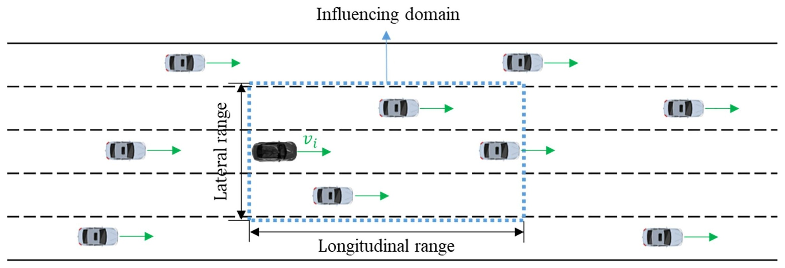
주체 차량 주위의 동적 영향영역(점선 박스). 이 안에 든 주변 차량만 복잡도에 기여하며, 범위는 RSS와 주행 상태·도로 형상에 따라 변한다. "얼마나 많은가(quantity)"를 정하는 부분이다. (클릭 시 확대)
Fig 5 · 차량 쌍의 조우각·상대속도·상대거리
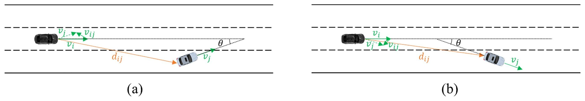
차량 쌍의 조우각 θ, 상대속도 vij, 상대거리 dij. 기본 복잡도는 이 조우각에서 출발한다. "얼마나 다양한가(variety)"를 잡는 부분이다. (클릭 시 확대)
Fig 12 · 한 주행의 복잡도 곡선(평활 전후)
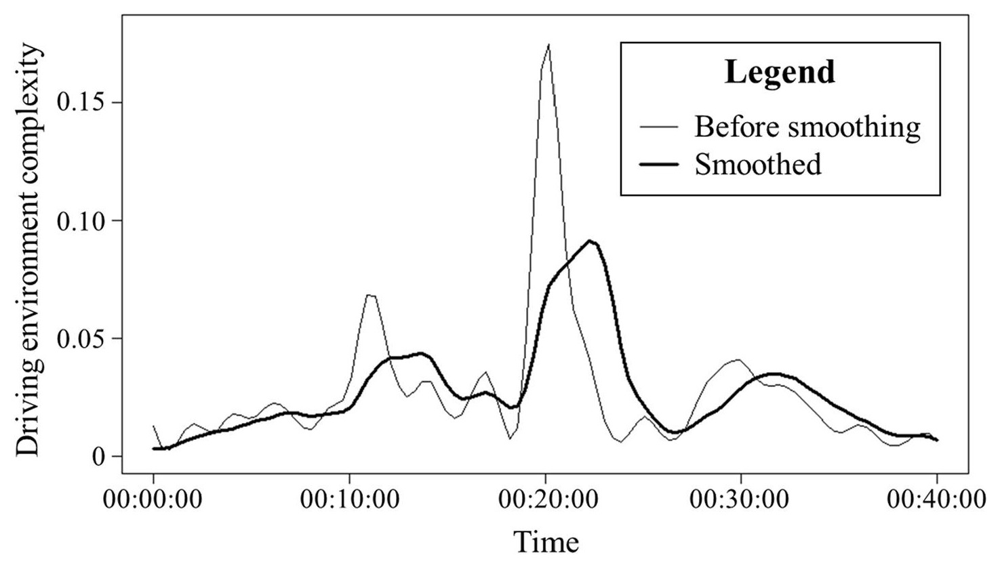
한 주행에서 시간에 따른 복잡도. 평활(굵은 선)은 사람의 인지를 닮도록 뾰족한 봉우리를 완만하게 만든다. 복잡도의 변화 시점·정도를 곡선으로 드러낸다. (클릭 시 확대)
접근
정보 엔트로피 기반 객관적 복잡도 정량화(차-차 상호작용)
복잡도 정의
주변 차량과의 시공간 상호작용: 수·다양성·관계
검증
상하이 FOT 사례 + 인간 운전자와 ICC(0.84~0.96)
우리와의 연결
난이도 공변량 후보, 인간 판단에 anchoring
연구 배경
시나리오 기반 시험에서 복잡도는 중요한 criticality 척도로 여겨지지만, 기존 정량화에는 두 한계가 있었다. 주관적 방법은 사람의 평가에 기대 빅데이터에 적용하기 어렵고, 객관적 방법은 인간 운전자의 특성을 고려하지 않아 성능을 보장하지 못한다. Yu는 이 둘 사이를 메워, 인간 운전자가 내리는 복잡도 판단을 객관적으로 정량화하는 일반 framework를 제안한다. 즉 사람이 느끼는 복잡함을 데이터로 자동 계산하되, 그 결과가 실제 인간 판단과 맞는지까지 검증하려는 것이 출발점이다.
무엇을 했나
주변 차량과의 시공간 상호작용을 세 관점으로 적어 복잡도를 정량화한다(Fig. 2, Fig. 5). 얼마나 많은 차량이 영향을 주는가(quantity), 그 차량들이 얼마나 다양한 상태·거동·의도를 갖는가(variety), 그리고 그 관계가 어떻게 얽히는가(relations)를 각각 모델로 만들어 하나의 복잡도 값으로 합친다. 이를 상하이 실주행 데이터에 적용해 복잡도가 언제·얼마나 변하는지를 보이고, 인간 운전자의 판단과 얼마나 일치하는지를 정량 지표로 검증한다.
방법론 상세
영향영역(quantity): 복잡도에 기여하는 주변 차량을 RSS 이론으로 가려낸다. 이 영역은 동적이라, 종·횡 범위가 주체 차량의 주행 상태와 도로 형상에 따라 달라진다"the influencing area is set to be dynamic, where the longitudinal and lateral ranges would vary according to the subject vehicles' driving states ... as well as the road geometry"(§3).
조우각 복잡도(variety): 차량 쌍의 조우각(encounter angle)을 기준으로 기본 복잡도를 매긴다(Fig. 5). 두 차의 상대속도·상대거리도 함께 들어간다.
정보 엔트로피(relations): 정보 엔트로피 이론으로 비선형 관계를 도입해 종방향·횡방향의 서로 다른(heterogeneous) 복잡도를 잡는다.
집계·평활: 차량 쌍 복잡도를 모은 뒤 평활해 사람의 인지 특성을 반영한다(Fig. 12). 뾰족한 봉우리를 사람이 느끼듯 완만하게 만든다.
결과
상하이 도심 FOT 데이터로 세 사례(끼어들기·차간추종, 세 번의 차로변경, 끼어들기·빠져나가기)를 분석하니, 복잡도 곡선이 변화의 시점과 정도를 정확히 잡고 시나리오 유형·시공간 이질성에 따른 차이를 드러냈다(Fig. 12). 결정적인 검증은 인간 운전자와의 일치다. 모델과 세 운전자의 복잡도 평가 일치도(ICC)가 각각 0.838·0.930·0.957로, 인간 운전자들끼리의 일치도 0.908에 견줄 만큼 높았다. 즉 객관적으로 계산한 복잡도가 사람이 느끼는 복잡도와 잘 맞는다 "ICC is calculated to assess the consistency of ratings ... about the complexities of the same set of driving videos provided by the quantification model and human drivers"(§6.3).
한계
복잡도가 인간 운전자의 판단을 기준점으로 삼는다. 검증도 특정 운전자 집단과의 일치도이고, 데이터도 상하이 도심 FOT에 한정된다. 또 저자들 스스로, 이렇게 계산한 복잡도를 AV의 개발·평가에 실제로 어떻게 활용할지는 향후 과제로 남긴다. 복잡도가 높다고 그 시나리오에서 특정 AV가 충돌한다는 보장도 아니다.
본 연구와의 관계
Yu의 복잡도는 우리 설명적 IRT의 난이도 공변량 후보다. RSS 기반 영향영역, 조우각, 정보 엔트로피로 만든 복잡도 특징은 시나리오 난이도 b를 시나리오 특징의 함수로 둘 때 그대로 입력이 될 수 있다. 특히 RSS로 "어떤 차량이 영향을 주는가"를 정하는 부분은 섹션 D의 회피가능성 논의와도 닿는다.
다만 기준점이 다르다. Yu는 난이도를 인간 운전자의 판단에 맞춰 정의하고 ICC로 그 일치를 검증한다. 즉 "사람이 느끼는 복잡함"이 기준이다. 우리는 난이도를 사람의 주관이나 단일 기준이 아니라 여러 AV의 충돌 응답에서 추정하고, 어떤 응시자로 재든 변하지 않는 잠재 척도(specific objectivity)를 목표로 한다. 그래서 Yu의 복잡도는 우리에게 b의 좋은 공변량이자, 추정된 난이도가 사람의 직관과 어긋나지 않는지 점검하는 외적 준거로 쓸 수 있다. 인간 판단과의 ICC 검증 방식 자체도 우리 난이도 추정의 타당성 점검 절차로 참고할 만하다.
SAE 2022-01-00702022최적제어 가치함수난이도 metric
Criticality Assessment of Simulation Based AV/ADAS Test Scenarios (Optimal-Control Value Function)
P. Tulpule, B.-S. Chen, U. Vaidya. SAE Technical Paper 2022-01-0070 (2022); M.S. thesis, The Ohio State University. doi:10.4271/2022-01-0070.
한눈에criticality를 "사고를 피하는 안전 기동이 얼마나 어려운가"로 정의하되, 그 정의가 어떤 컨트롤러나 운전자 모델에도 기대지 않게 만든 것이 핵심이다. 방법은 최적제어다. 특정 AV가 아니라 최적 정책을 풀어 그 가치함수(또는 충돌확률)를 구하면, 그 값이 그 상황에서 최선을 다해도 얼마나 어려운가를 말해 준다. 그래서 시나리오를 sub-critical(세게 제동만 해도 피함), critical(보통 운전자는 못 피할 수 있으나 차량 동역학 안에서 피하는 기동이 존재함), over-critical(무엇을 해도 못 피함)로 가른다. 동역학 모델과 보상만 정하면 컨트롤러 없이 난이도를 매기는, C에서 가장 SUT-독립에 가까운 시도다.
Fig 11 · 최적제어 비용함수(기동 난이도) 지도
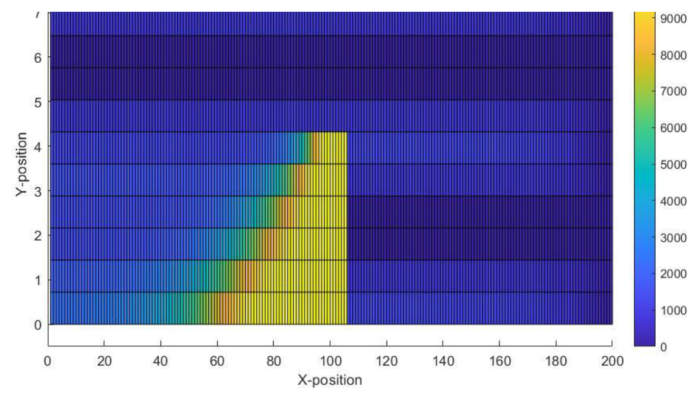
최적제어로 푼 비용함수(cost-to-go). 장애물 근처일수록 비용이 높아(노랑) 안전 기동이 어렵고, 멀수록 낮다(파랑). 이 값이 "최선을 다해도 얼마나 어려운가"를 말한다. (클릭 시 확대)
Fig 17 · 충돌확률 지도(sub/critical/over-critical 구분)
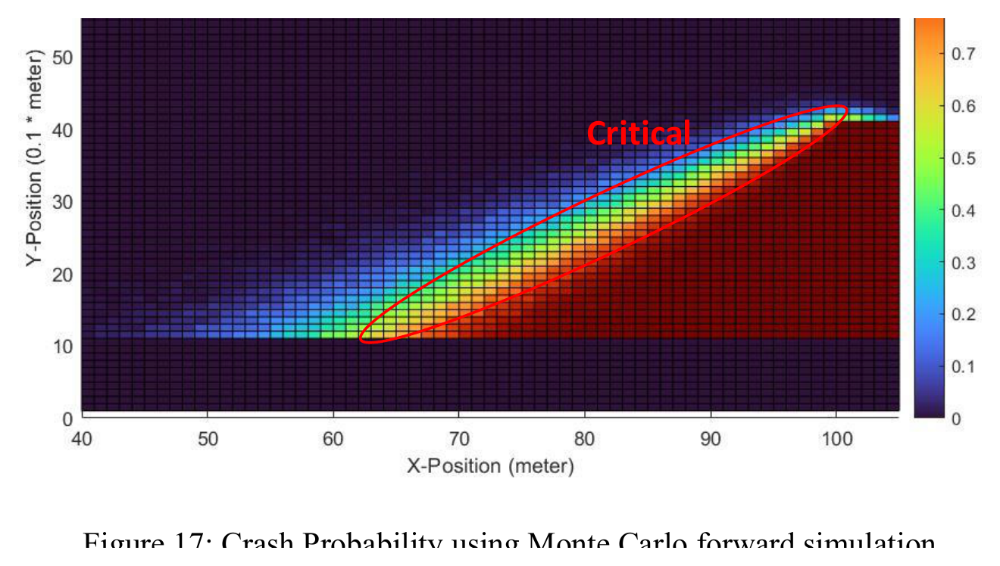
불확실성을 넣어 구한 충돌확률. 보라(0%)는 쉽게 피하는 sub-critical, 빨강(100%)은 못 피하는 over-critical, 가운데 'Critical' 띠는 피하는 기동이 존재하나 어려운 영역이다. 우리 하한 u와 난이도에 그대로 대응한다. (클릭 시 확대)
접근
최적제어(DP·MC·Value Iteration) 가치함수로 criticality 계산
criticality 정의
최적 기동의 난이도 + 충돌확률(가치함수)
세 구간
sub-critical · critical · over-critical
우리와의 연결
b의 공변량 + over-critical = 하한 u의 동역학적 라벨
연구 배경
시뮬레이션 기반 검증에서 어떤 시나리오가 critical한지, 곧 AV의 안전 기능이 사고를 막는 데 실제로 중요한 역할을 하는 구간이 어디인지를 시나리오 매개변수 공간에서 찾아야 한다. 이 criticality는 속도·차량 동역학·상대 궤적 등 여러 매개변수에 달려 있지만, 저자가 분명히 내건 요구는 criticality의 정의가 ADS 컨트롤러나 운전자 모델과 무관해야 한다는 것이다. TTC 같은 흔한 대리지표(SSM)는 임계값이 1.5~4초로 들쭉날쭉하고 인간 거동을 부분적으로만 닮아 위험을 과대평가하는데, 그래서 컨트롤러에 기대지 않는 새 정의가 필요하다는 것이다.
무엇을 했나
최적제어의 가치함수를 criticality 지표로 삼는다. 특정 컨트롤러로 한 번 굴려 보는 대신, 주어진 동역학·제약·보상에서 최적 정책을 풀면 그 가치함수가 "기동의 상대적 용이함과 안전하게 끝날 확률"을 함께 담는다. 세 단계로, 실제 충돌 데이터에서 논리 시나리오를 만들고, 장애물 회피 기동에 대한 최적제어 전략을 구한 뒤, 모델 불확실성을 넣어 충돌확률을 계산한다(Fig. 11, Fig. 17). 핵심은 이 절차가 특정 운전자·컨트롤러와 무관하게 critical 시나리오를 만든다는 점이다 "it is necessary to account for these circumstances in order to build the critical scenarios that are regardless of the specific driver model or controller"(§Phase Three).
방법론 상세
대상 시나리오: 고속 정적 장애물 회피(ego 20 m/s, 2차로 고속도로, X=100 m에 정지 장애물). 횡방향 운동이 있어 AEB보다 복잡하다.
동역학·보상: yaw rate로 안정 영역을 따지는 선형화 2자유도 운동학 모델을 쓰고, 보상은 장애물 회피 + ego yaw rate 최소화다. 난이도(maneuver difficulty)를 계산하려는 목적이라 컨트롤러용 정밀 모델은 필요 없다.
세 최적제어: 동적계획법(DP), Monte Carlo off-policy 제어(RL), 가치반복(Value Iteration/MDP)을 쓴다. 가치함수를 상태공간 전체에서 구하면 그 값이 시나리오를 sub/critical/over-critical 영역으로 나눈다(Fig. 11).
불확실성·충돌확률: 차량 질량과 질량중심–앞축 거리를 정규분포 불확실성으로, 지각·상태 전이를 전이확률 행렬(MDP)로 모델링하고, Monte Carlo 전방 시뮬레이션(각 시작점 500회)으로 충돌확률을 구한다(Fig. 17).
결과
가치함수·충돌확률을 상태공간 전체에 그리면 criticality가 색으로 드러난다. 장애물 근처는 비용이 높아(가장 어려움) critical하고, 멀수록 쉬워진다(Fig. 11). 불확실성을 넣은 충돌확률 지도(Fig. 17)는 시나리오를 세 영역으로 가른다. 충돌확률 0%(보라)는 쉽게 피하는 sub-critical, 100%(빨강)는 어떤 최적 정책으로도 못 피하는 over-critical, 그 사이는 피하는 기동이 존재하나 어려운 critical 구간이다"the color purple represents the 0% of crash probability ... a sub-critical scenario. The color red represents the probability of 100% ... it is impossible to avoid the crash, which can be considered an over-critical scenario"(§Criticality Assessment).
한계
criticality가 가정한 차량 동역학 모델과 보상 설계(yaw rate 최소화)에 상대적이고, 단일 장애물 회피라는 한 시나리오 유형으로 시연된다. 최적제어가 다루는 것은 이상적인 최선의 정책이지 실제 AV의 정책이 아니며, 상태공간 이산화에 따라 결과가 흔들린다. 충돌확률 계산도 선택한 불확실성(질량·질량중심)에 한정된다.
본 연구와의 관계
Tulpule는 C의 다른 연구들 중 우리와 정신적으로 가장 가깝다. 난이도를 특정 컨트롤러가 아니라 "최선을 다하면 얼마나 어려운가"로 잡고, sub/critical/over-critical 세 구간으로 나눈 것이 우리 척도와 그대로 맞물린다. over-critical(어떤 최적 정책으로도 못 피함)은 우리 하한 u의 동역학 기반 라벨이고(섹션 D의 RSS·Calò와 상보적), sub-critical은 낮은 난이도 b, 그리고 critical은 피하는 기동이 존재하나 어려워 AV 능력 θ가 갈리는 식별 구간이다.
차이는 응시자의 수다. Tulpule의 가치함수는 하나의 이상적 최적 정책(게다가 가정한 동역학·보상)에서 나온 난이도라, 측정이론으로 보면 능력이 무한대인 한 응시자에 대한 문항 난이도에 가깝다. 우리는 난이도를 단일 최적 정책이 아니라 여러 실제 AV의 충돌 응답에서 잠재 척도로 추정하고, 그 위에 AV 강건성을 함께 올린다. 그래서 Tulpule의 가치함수는 우리 난이도 b의 강력한 공변량이자, over-critical 라벨로 하한 u를 동역학적으로 정하는 보완 수단이 된다.
IEEE IV 20252025충돌 근접도(SUT 의존)criticality measure
How unsafe was the scenario? A criticality measure for scenario-based testing of automated vehicles
K. T. Kurian, N. Rajesh, E. Lefeber, J. Ploeg, N. van de Wouw, I. Besselink, M. Alirezaei. 2025 IEEE Intelligent Vehicles Symposium (IV). TU Eindhoven 등. doi:10.1109/IV64158.2025.11097344.
한눈에앞의 C 연구들이 난이도를 AV와 떼려 한 것과 달리, Kurian은 criticality를 대놓고 "특정 ADS 차량이 충돌에 얼마나 가까웠나(proximity to collision)"로 정의한다. 그 ADS의 실제 궤적을 따라가는 기준 차량(RV)의 물리적으로 가능한 미래 궤적들을 펼쳐, 그중 충돌하는 비율 Rp를 criticality로 삼는다. Rp=1이면 어떤 미래로도 못 피하는, 회피 불가 충돌이다. 같은 시나리오라도 ADS 버전(헤드웨이 같은 파라미터)이 다르면 Rp가 달라지므로, criticality가 SUT에 의존함을 정의 수준에서 인정한다. 충돌 0/1보다 결이 고운, AV별 시나리오 응답 값이다.
Fig 4 · 가능한 미래 궤적을 펼쳐 충돌 비율(Rp)을 센다
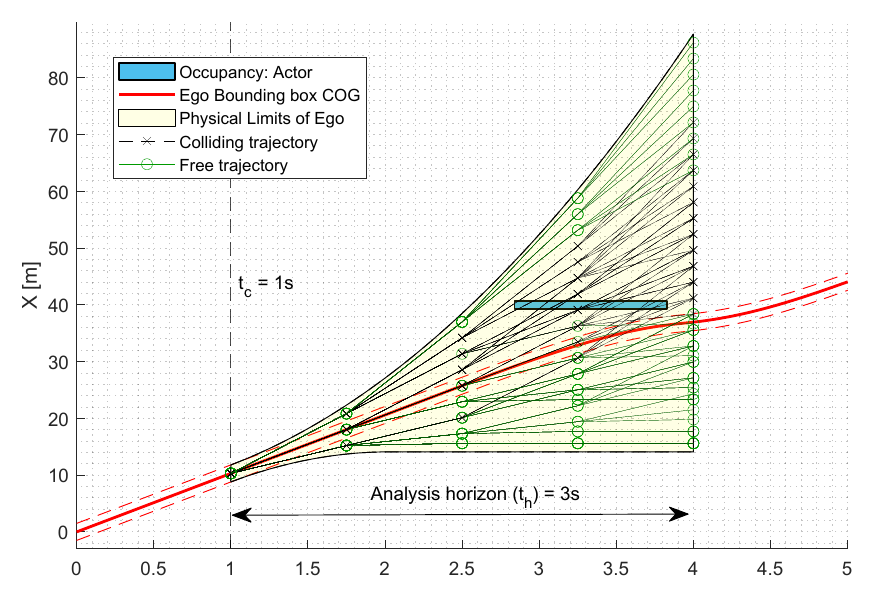
분석 시점에서 ego가 물리적으로 갈 수 있는 미래 궤적들을 펼치고, actor와 겹쳐 충돌하는 것(검정)과 피하는 것(초록)을 세어 그 비율 Rp를 구한다. 충돌 근접도를 가능한 미래의 분율로 측정한다. (클릭 시 확대)
Fig 5 · 같은 시나리오, ADS 버전에 따라 갈리는 Rp
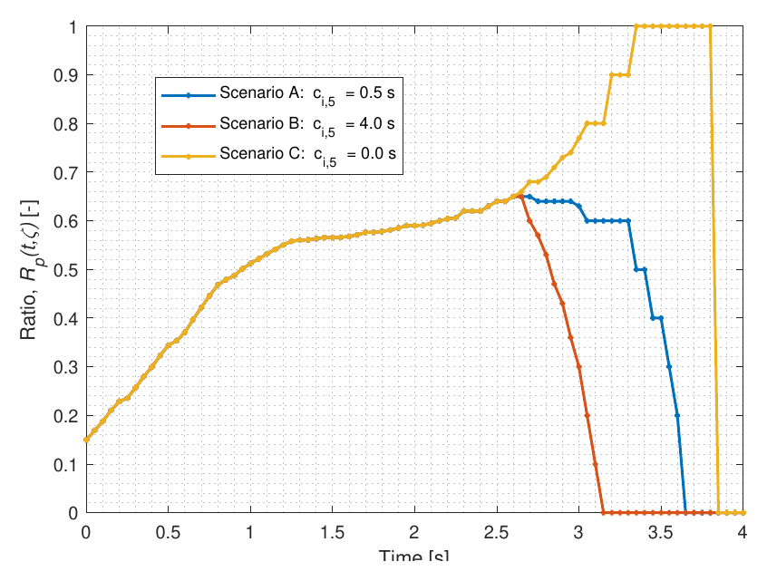
같은 교차로 시나리오인데 ADS의 헤드웨이 파라미터만 다르다. A·B는 Rp가 0으로 떨어져 충돌을 피하고, C는 1로 올라 회피 불가가 된다. criticality가 ADS 버전(SUT)에 따라 갈린다. (클릭 시 확대)
접근
기준 차량(RV)의 가능한 미래 중 충돌 비율 Rp로 criticality
정의 특성
a posteriori · 충돌 근접도 · SUT(ADS 버전) 의존
검증
교차로·고속도로 두 도로망, 여러 ADS 파라미터
우리와의 연결
결이 고운 (AV×시나리오) 응답값, Rp=1 = 하한 u
연구 배경
시나리오 기반 시험(SBT)을 ISO 21448에 맞춰 최적화로 돌리면, ADS의 ODD 안에서 위험 시나리오를 찾는 문제가 된다. 그러려면 시나리오의 "위험함"을 재는 비용함수가 필요한데, 저자들은 기존 criticality 척도가 요구 조건을 만족하지 못한다고 보고, 위험함을 "그 ADS 차량이 충돌에 얼마나 가까웠는가"로 해석한다. 흥미롭게도 이 정의는 난이도를 AV와 떼려던 앞의 C 연구들과 정반대로, criticality가 그 ADS의 거동에 달려 있음을 처음부터 받아들인다.
무엇을 했나
ADS 차량의 실제 궤적을 따라가는 기준 차량(RV)을 두고, 그 RV가 물리적 제약 안에서 갈 수 있는 가능한 미래 궤적들의 집합에서 충돌하는 비율을 criticality로 정의한다(Fig. 4). 불안전한 ADS 거동은 그 ADS의 궤적을 따르는 RV의 충돌 미래 비율로 드러난다는 것이다"the unsafe driving behavior of an ADS-V is indicated by the fraction of colliding future trajectories for an RV following the ADS-V's trajectory"(§III). 시험 대상은 명시적으로 그 ADS 차량이다 "The System Under Test (SUT) is the ADS-V, which is the ith ADS version combined with the host vehicle"(§III). 이미 생성된 시나리오의 criticality를 사후(a posteriori)에 매기는 척도다.
방법론 상세
가능한 미래 집합: 분석 시점 tc에서 RV의 동역학·물리 제약을 만족하는 미래 궤적들을 가속도 범위([-10,10] m/s²)에서 표본해 펼친다(Fig. 4, 분석 구간 th=3s).
충돌 비율 Rp: 펼친 미래 가운데 actor 점유와 겹쳐 충돌하는 궤적의 비율을 센다. 이 Rp(tc)는 시간과 공간 양쪽으로 충돌 근접도를 나타내고, Rp=1이면 회피 불가 충돌이다"It indicates an inevitable collision once Rp(tc, ζ) = 1"(§V).
SUT 변동: IDM 컨트롤러의 정지간격 ci,4·헤드웨이 ci,5를 바꿔 서로 다른 ADS 버전을 만들고, 같은 시나리오에서 criticality가 어떻게 달라지는지 본다.
검증: 교차로(시나리오 A·B·C)와 고속도로(D·E·F, 추종·끼어나가기·정지) 두 도로망에서 평가하고, 전체 시나리오에 대한 집계 C(ξ)=‖Rp(tc,ξ)‖로도 본다.
결과
교차로에서 세 ADS 버전(헤드웨이 0.5s·4.0s·0.0s)은 actor 검출 전(2.6s)까지 Rp가 똑같이 오르다가, 검출 후 갈린다(Fig. 5). A·B는 제동으로 Rp가 0까지 내려가 충돌을 피하고, C는 Rp가 1까지 올라 회피 불가가 된다. 같은 시나리오인데 ADS 파라미터만 달라도 criticality가 뒤바뀐다. 헤드웨이가 작을수록 위험해지고(C>A>B), 고속도로에서도 앞차와의 간격이 작을수록 criticality가 커진다(F>D>E). Rp가 충돌 근접도를 잘 나타내는 criticality임을 보인다 "Rp(tc, ζ) measures the proximity to a collision indicating the criticality of a scenario at a time instant"(§V).
한계
criticality가 사후(a posteriori) 척도라, 이미 ADS 궤적이 만들어진 뒤에야 매길 수 있다. RV의 가능한 미래는 가정한 동역학·가속도 범위와 표본 수(nacc·nstep)에 의존하고, 완벽한 센서·1차원 RV 운동 같은 단순화가 들어간다. 충돌 심각도는 간단히만 논의한다. 무엇보다 criticality가 그 ADS 궤적에 묶여 있어, 시나리오 자체의 SUT-불변 난이도는 아니다.
본 연구와의 관계
Kurian은 C에 있으면서도 B(SUT 의존성)와 가장 가까운 다리다. criticality를 특정 ADS의 충돌 근접도로 두고 ADS 버전마다 값이 달라짐을 보이는데, 이 (ADS 버전 × 시나리오)의 Rp 값이 바로 우리 IRT 응답 격자의 칸과 같다. 다른 C 연구들이 난이도를 SUT와 떼려 한 반면, Kurian은 SUT 의존을 인정하고 그 결과(Rp)를 직접 보고한다.
우리에게 두 가지 쓸모가 있다. 첫째, Rp는 충돌 0/1보다 결이 고운 연속값이라, 이항 충돌 대신 등급 응답(graded response) 형태의 관측으로 측정 모델에 넣으면 더 풍부한 신호를 준다. 둘째, Rp=1(회피 불가)은 우리 하한 u를 동역학으로 표시하는 또 하나의 방법이다(섹션 D의 Tulpule over-critical, RSS와 같은 자리). 다만 Kurian의 Rp는 그 ADS의 실현 궤적에 묶인 사후 값이라, 우리는 이를 한 AV에 대한 응답으로 보고 여러 AV에 걸쳐 시나리오 난이도와 AV 강건성을 하나의 SUT-불변 척도로 분리 추정한다.
섹션 C 정리
난이도를 충돌률이 아니라 시나리오 쪽 성질로 매기려던 다섯 시도를 시간순으로 봤다. Wagner는 자연주행 거동의 Monte-Carlo 전개와 TTR로, Junietz는 최적제어 목적함수로, Yu는 정보 엔트로피 기반 상호작용 복잡도로, Tulpule는 최적제어 가치함수로 난이도를 잡았고, Kurian은 방향을 틀어 충돌 근접도를 ADS별로 매겼다. 앞의 넷은 난이도를 SUT와 떼려 했지만 모두 어딘가에서 SUT가 새어 든다. Wagner의 반응시점 TPNR, Junietz의 가중치 보정, Qiu의 고정 EV, Tulpule의 동역학·보상 가정이 그렇고, Kurian은 아예 SUT 의존을 정의에 받아들인다. 이 metric들은 우리 설명적 IRT의 난이도 공변량 후보이자(특히 Tulpule의 over-critical과 Kurian의 Rp=1은 하한 u의 동역학 라벨), 우리가 넘어서는 대안이다. 우리는 난이도를 사람이 정한 가중치나 한 AV가 아니라 여러 AV의 응답에서 잠재 척도로 추정하고 그 위에 강건성을 함께 올린다. 다음은 섹션 E다. 시나리오가 AV에 반응하고(reactivity) 위험도를 단계로 높이는(severity) 생성 기법을 본다.